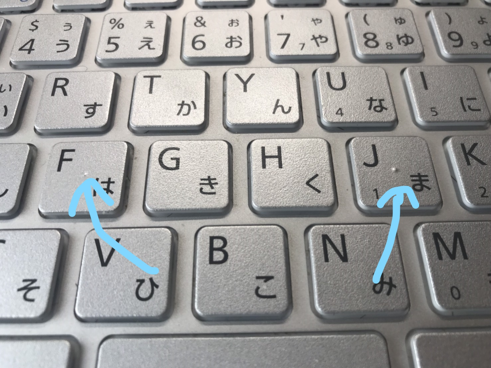

ホームポジション
目次
ホームポジションとはなにか
タッチタイピングを習得する上で大切なのがホームポジションです。
ホームポジションとはタイピングをするときに指を構えておく場所で、何か打った場合もすぐまたそこに指を配置しておく場所のことをいいます。
タッチタイピングはキーボードを見ないで打つのでホームポジションをおろそかにすると自分が今どこに指をおいているのか分からなくなってしまいます。
ホームポジションを習得しよう！
ホームポジションの場所は決まっていてまず最初に右手の人差し指を「J]に、左手の人差し指を「F]に置きます。
このとき実はキーボードを見なくても「J]と「F]の位置が分かります。
それはキーボードの「J]と「F]のところに出っ張りがあるからです。

これにより、最初の位置合わせでもキーボードを見ずにホームポジションに指を構えられます。
その外の指は左手は左手の人差し指の左側に一本ずつ配置、右手は右手の人差し指の右側に一本ずつ配置します。
| 左手の指を置く場所 | |||
|---|---|---|---|
| 小指 | 薬指 | 中指 | 人差し指 |
| A | S | D | F |
| 右手の指を置く場所 | |||
|---|---|---|---|
| 人差し指 | 中指 | 薬指 | 小指 |
| J | K | L | ; |
実際にキーボードを打つ際にはそれぞれの指に担当場所が決まっており、ホームポジションから上下すべてを担当します。
ここで気をつけなければならないことは人差し指だけ二列分担当するということです。
最初は右手の人差し指と左手の人差し指で打つところが曖昧になってしまうと思われますが少しずつ慣れていけば大丈夫です！
最後に一番重要なのが一字ごとにきちんとホームポジションに指を戻すということです。
ホームポジションからどれだけ動かすかでキーボードを打つ場所の見当をつけるのでホームポジションを維持することはとても大切です。